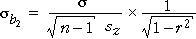

Observational studies and experiments
We have shown that orthogonal explanatory variables result in the most accurate estimates of the slope parameters and also that the resulting parameter estimates and anova table are easier to interpret.
In an observational study, the values of X and Z are usually correlated — we have no control over their values so it is unlikely that their correlation will be exactly zero, even if it is sometimes low.
In an experiment however, the researcher can often choose the values of the explanatory variables. Good experimental design selects the values of X and Z to make them orthogonal.
Simple orthogonal design
The simplest way to ensure that the explanatory variables are uncorrelated is to use only a small number of different values for each of X and Z, then to make an equal number of response measurements at each possible combination of levels of these variables.
Examples
In an experiment, an entomologist recorded energy expenditure (joules/sec) for bees drinking water with different sucrose concentrations (percentage) and at different temperatures. The researcher decided to conduct the experiment using three different temperatures (20, 30 and 40 degrees C) and three different sucrose concentrations (20, 40 and 60%).
By measuring energy expenditure from the same number of bees at each combination of temperature and sucrose (three replicates), the two explanatory variables were guaranteed to be orthogonal.
| Temperature (degrees C) | ||||
|---|---|---|---|---|
| 20 | 30 | 40 | ||
| Sucrose concentration (%) |
20 | 3.1, 3.7, 4.7 | 6.0, 6.9, 7.5 | 7.7, 8.3, 9.5 |
| 40 | 5.5, 6.7, 7.3 | 11.5, 12.9, 13.4 | 15.7, 14.3, 15.9 | |
| 60 | 7.9, 9.2, 9.3 | 17.5, 15.8, 14.7 | 19.1, 18.0, 19.9 | |
The diagram below shows an analysis of these data.
Note that there is only a single anova table, and the two p-values can be used to test whether the corresponding variables can be dropped from the full model.
Use the pop-up menu to see another experimental data set and its analysis.
Other orthogonal designs
It is not essential to record the same number of response observations at every combination of X and Z for the explanatory variables to be orthogonal although there is rarely any reason to choose other orthogonal designs.
X and Z are orthogonal if the spread of observations over Z is the same for each level of X.
Other orthogonal designs for bee energy expenditure
The following designs are all orthogonal.
| Temperature | ||||
|---|---|---|---|---|
| 20 | 30 | 40 | ||
| Sucrose | 20 | 3 | 3 | 3 |
| 40 | 3 | 3 | 3 | |
| 60 | 3 | 3 | 3 | |
| Temperature | ||||
|---|---|---|---|---|
| 20 | 30 | 40 | ||
| Sucrose | 20 | 5 | 5 | 5 |
| 40 | 2 | 2 | 2 | |
| 60 | 2 | 2 | 2 | |
| Temperature | ||||
|---|---|---|---|---|
| 20 | 30 | 40 | ||
| Sucrose | 20 | 4 | 2 | 2 |
| 40 | 6 | 3 | 3 | |
| 60 | 4 | 2 | 2 | |
Advantage of equal replicates
The standard error of each regression slope estimate depends on the standard deviation of the corresponding explanatory variable (among other things),

where r is the correlation coefficient between X and Z. When comparing orthogonal designs (with r = 0), the standard errors of the slopes are lowest when the standard deviations of X and Z are highest. Concentrating the design on one or two levels of X or Z decreases their standard deviations, so:
A design with equal replicates is usually best.